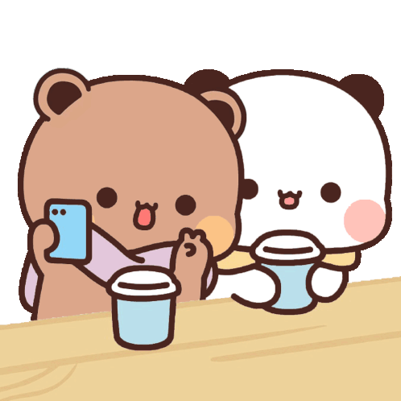
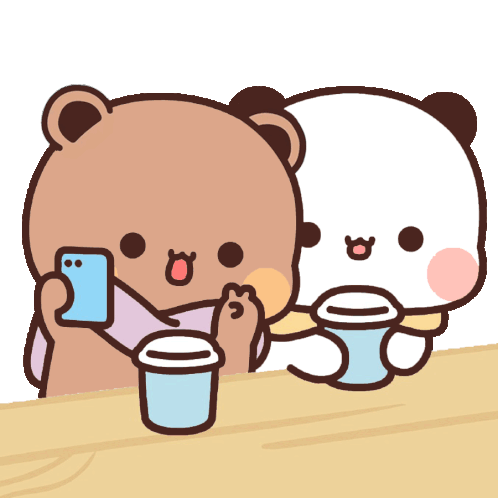

Sentuh LOVEnya!


 



Happy Anniversary sayangkuu hehe, happy anniversary fabiee! selamat bulan ke-12 untuk kitaa!
Terimakasih untuk tetap bersama sampai kita sampai dititik ini sayangg. I loveee lovee loveee youu so much my farelloo.
Tetap sama kamu salah satu hal yang paling aku syukuri sampai sekarang. tetap ada fabie, tetap ada farello dan Gabbie. tetap ada kitaa.
Terimakasih udah jadi pasangan yang baik selama ini sayang, terimakasih karena udah jadi pasangan yang sabar dan punya kesabaran yang seluas samudra hehe
Aku ga bakal bosen-bosen untuk bilang aku sayang sama kamuu, selalu sayang. sampai sekarang juga rasanya ga berubah hehehe
Terimakasih udah jadi orang yang selalu dengerin aku yaa? hehehe terimakasih buat selalu ada untuk akuu :(
Dibulan ke-12 kita ini semoga segala hal baik ada disekitar kita yaa. semoga aku dan kamu selalu bertahan sampai sekarangg.
Aku juga ga bakal bosen-bosen bilang kalau kamu pasangan terbaik dan paling terbaik yang pernah adaaa! kalau ada kata yang bisa gambarkan paling terbaik berarti itu kamuu AHAHAHA
Sampai detik ini kamu masih jadi manusia terfavorit aku heheh, masih jadi orang yang selalu aku hubungin apapun keadaan dan situasi. aku sayang sayang sayangg kamuu heheheheh
I loveee youu so so soo much my farelloo
Klik untuk Geser!
Happy Anniversary fabie! Happy Anniversary kitaa. Ini hadiah simple yang bisa aku kasih untuk kamu sayang, semoga kamu suka yaaa. Sayang satu hal yang perlu kamu tau untuk hari ini, besok, besoknya juga, besoknya lagi, dan seterusnya heheh, kalau aku selalu ada disini untuk kamuuu, kalau kamu butuh seseorang aku ada disinii untuk kamu. aku sayang kamu dari awal kita jalin hubungan sampai sekarang, rasanya masih sama dan aku masih sayang kamu sampai sekarang. Terimakasih untuk selalu usaha dalam hubungan kita sayang, terimakasih buat segala maaf dan usaha kamu sampai sekarang. maaf kalau aku kadang buat kamu kesel bahkan sampai marah :(. Punya kamu jadi salah satu hal yang harus aku syukuri dan patut disyukuri, punya kamu jadi salah satu hal terbaik yang pernah ada buat akuu heheh. aku sayang kamu dan selalu sayangg. semoga aku dan kamu sehat dan bahagia selalu sayangg!
sekali lagi Happy Anniversary kita! I love you more and more my farelloo.